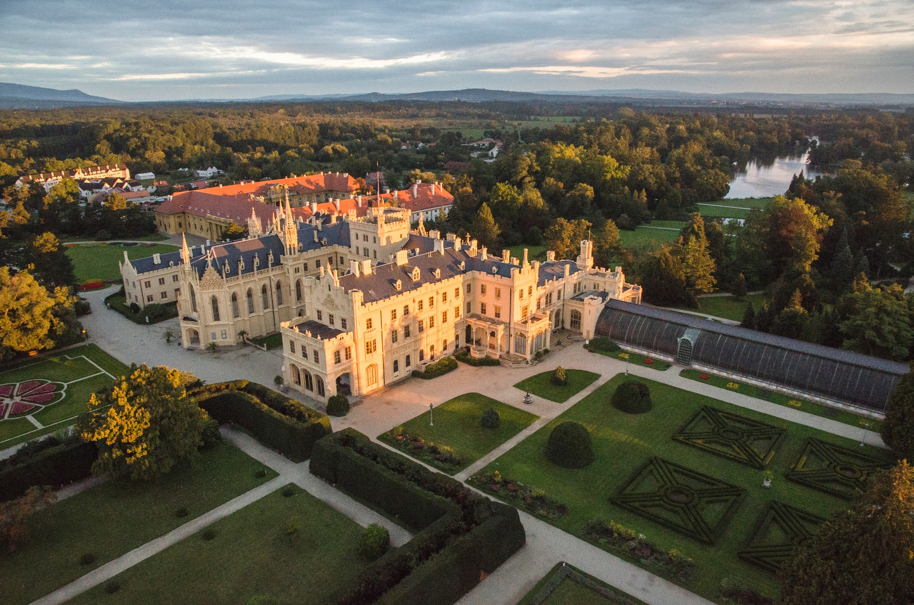
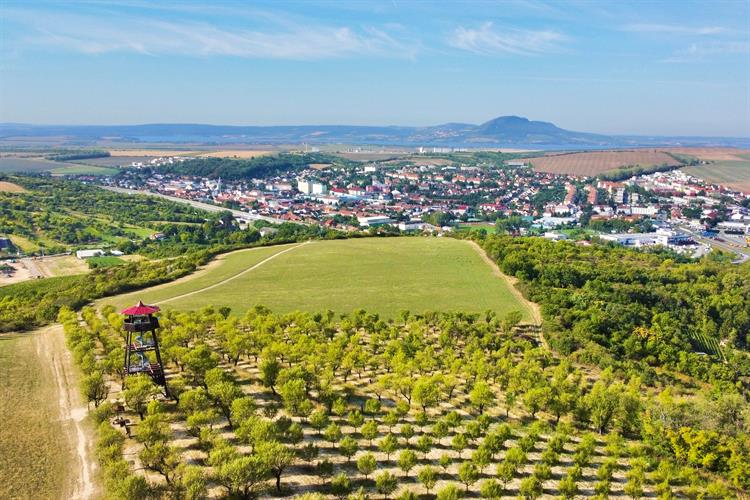
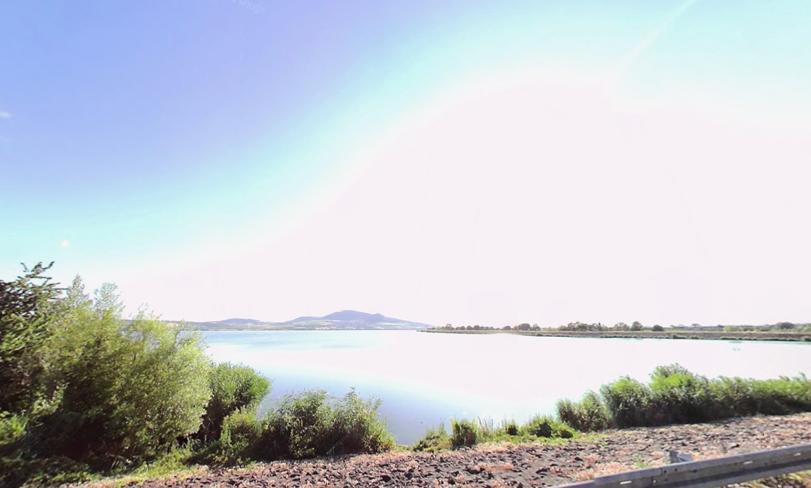
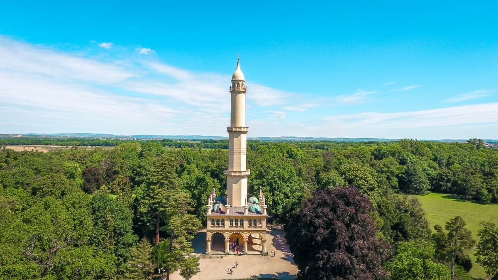

Státní zámek Lednice je vrcholnou ukázkou anglické novogotiky a je na seznamu kulturních památek UNESCO.
Komplex proslul unikátními dřevořezbami v interiérech, historickým palmovým skleníkem a rozsáhlým parkem s romantickými stavbami. Lokalita nabízí propojení šlechtické architektury, vodních tras a špičkového zahradnictví.
Náročnější trasa
Přibližná délka trasy je 55 km (12 hodin)




Popis trasy
Trasa začíná u brněnského hlavního nádraží a vede přes Židlochovice a Hustopeče, přičemž střídá cyklostezky s polními cestami. Většina cesty kopíruje asfaltové úseky mezi vinicemi, kde hrozí dlouhá expozice slunci bez možnosti stínu.
Kritickým místem je okolí Novomlýnských nádrží a lužní lesy u Bulhar, kde po deštích bývá hluboké bahno a zvýšený výskyt komárů. Putování končí po cca 55 km příchodem k čestnému nádvoří zámku Lednice.